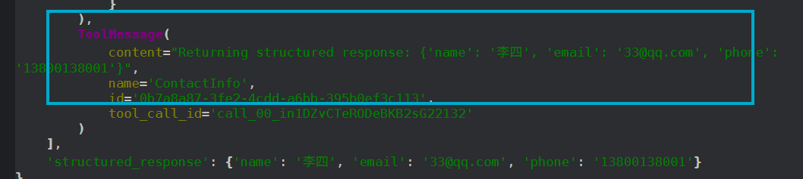
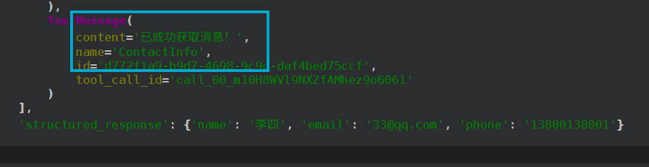
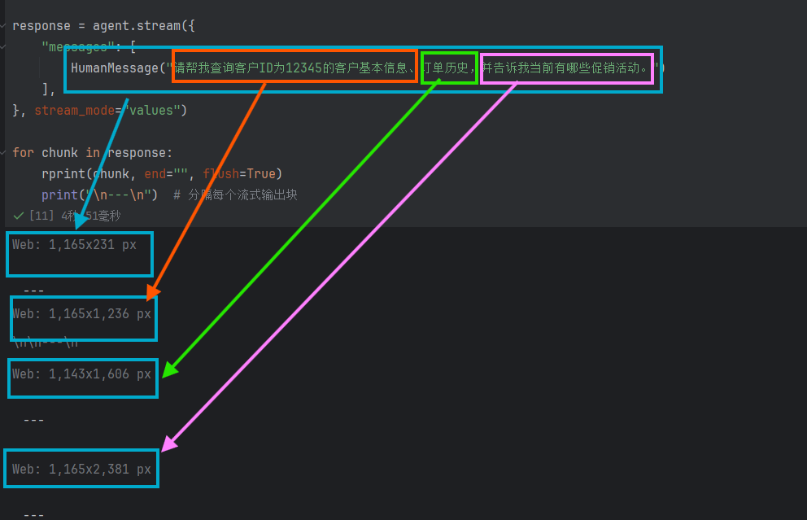
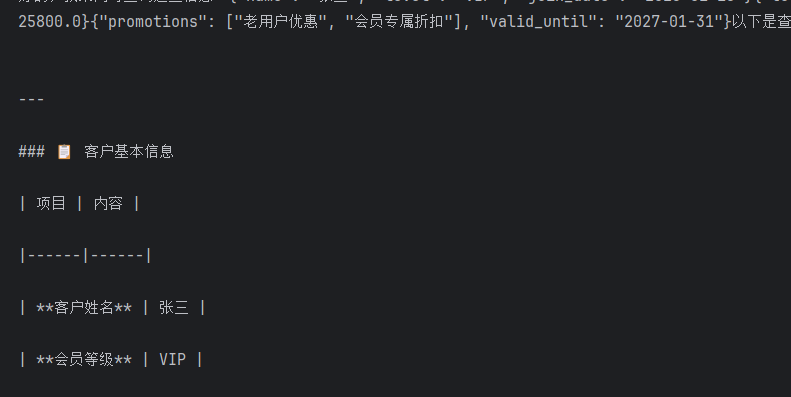

# LangChain
# 尝试使用 LangChain
通过 init_chat_model 创建模型，其中 api_key 是从环境变量读取的。
# 环境变量加载器
from dotenv import load_dotenv | |
load_dotenv() |
load_dotenv 通过读取目录下的 .env 文件来拿到指定的 KEY。
然后通过， @tool 注册 Function Calling 工具，通过 create_agent 封装 model，最后通过 agent.invoke 方法向大模型发起请求，具体如下所示：
import os | |
from langchain.tools import tool | |
from langchain.agents import create_agent | |
from langchain.chat_models import init_chat_model | |
model = init_chat_model( | |
model="Qwen/Qwen3-8B", | |
base_url="https://api.siliconflow.cn/v1/", | |
api_key=os.getenv("SILICONFLOW_API_KEY"), | |
model_provider="openai", | |
temperature=0.7, | |
) | |
@tool | |
def getWeather(city: str) -> str: | |
"""获取指定城市的天气（模拟）""" | |
return f"{city}的天气是晴天，温度25°C。" | |
# 3. 将模型对象传递给 create_agent | |
agent = create_agent( | |
model=model, | |
tools=[getWeather], | |
) | |
# 4. 调用代理 | |
response = agent.invoke( | |
{"messages": [{"role": "user", "content": "北京天气如何？"}]} | |
) | |
print(response) |
其中 invoke 是属于阻塞式调用。
注意这 agnet 和 model 两个其实是有本质区别的，你问 model ：“loss 为什么下降但 metric 不变？”，它只会给你经验分析，你问 agnet 同样问题，它可以：读取你的训练日志，分析 loss 曲线，对比 metric，给出结论，甚至还能画图、跑代码。
# 流式调用
stream = model.stream("你是谁") | |
for chunk in stream: | |
print(chunk.content, end="", flush=True) |
当 stream = model.stream("你是谁") 执行后，其实并不会直接范围大模型，只有你开始循环，不断地从 stram 中取 chunk 是才会发起调用。
# 通过 agent 调用
# 阻塞式调用
response = agent.invoke({ | |
"messages": [ | |
{"role": "user", "content": "请告诉我北京的天气。"} | |
] | |
}) | |
print(response) |
# 流式调用
messages = agent.stream({ | |
"messages": [ | |
{"role": "user", "content": "你是谁"} | |
] | |
}, stream_mode="messages") | |
print(type(messages)) |
for token, metadata in messages: | |
if token.content: | |
print(token.content, end="", flush=True) |
# 消息封装
from langchain_core.messages import SystemMessage, HumanMessage, AIMessage | |
messages = agent.invoke({ | |
"messages": [ | |
SystemMessage(content="你是一个自我介绍老师，专门生成专业的计算机方向的自我介绍。"), | |
HumanMessage(content="生成200字的自我介绍。") | |
] | |
}) |
pretty_print 是更直观的打印，还是非常不错的。
for message in messages['messages']: | |
message.pretty_print() |
还可以看见 Function 的调用过程：
messages = agent.invoke({ | |
"messages": [ | |
SystemMessage(content="天气预报员"), | |
HumanMessage(content="北京天气怎么样？") | |
] | |
}) | |
for message in messages['messages']: | |
message.pretty_print() |
================================ System Message ================================ | |
天气预报员 | |
================================ Human Message ================================= | |
北京天气怎么样？ | |
================================== Ai Message ================================== | |
Tool Calls: | |
getWeather (019db42c4a11957e59ca895355e3c8e5) | |
Call ID: 019db42c4a11957e59ca895355e3c8e5 | |
Args: | |
city: 北京 | |
================================= Tool Message ================================= | |
Name: getWeather | |
北京的天气是晴天，温度25°C。 | |
================================== Ai Message ================================== | |
北京今天是晴天，气温25摄氏度，天气晴朗，适合外出活动。记得防晒和补充水分哦！ |
# Prompts Engineering
不用程度的 Prompts 会直接影响模型的输出结果，好的提示词是成功的第一步：
system_prompt = """ | |
你是一个专业的代码工程师，会各种代码技巧。 | |
""" | |
agent_system_prompt = create_agent( | |
model=model, | |
tools=[], | |
system_prompt=system_prompt | |
) | |
for token, metadata in agent_system_prompt.stream({ | |
"messages": [ | |
HumanMessage(content="请告诉我如何使用Python读取文件？") | |
] | |
}, stream_mode="messages"): | |
if token.content: | |
print(token.content, end="", flush=True) |
尽管很全，但是有时候我们不需要输出这么多：
在 Python 中读取文件是一个常见操作，以下是几种常用方法及注意事项，帮助你高效、安全地处理文件读取任务： | |
--- | |
### **1. 基础读取方法 ** | |
使用内置的 `open()` 函数结合 `read()`、`readline()` 或 `readlines()` 方法读取文件。 | |
#### **1.1 一次性读取整个文件 ** | |
```python | |
with open('example.txt', 'r', encoding='utf-8') as file: | |
content = file.read() | |
print(content) | |
``` | |
- **`'r'`** 表示只读模式。 | |
- **`encoding='utf-8'`** 指定文件编码（可根据实际文件调整）。 | |
- **`with`** 语句自动关闭文件，避免资源泄漏。 | |
#### **1.2 逐行读取文件 ** | |
```python | |
with open('example.txt', 'r', encoding='utf-8') as file: | |
for line in file: | |
print(line.strip()) # 去除行尾换行符 | |
``` | |
。。。。中间省略 | |
| 方法 | 适用场景 | 优点 | | |
|------|----------|------| | |
| `read()` | 小文件 | 简单直接 | | |
| `readline()` | 逐行处理 | 节省内存 | | |
| `readlines()` | 需要全部行 | 一次性获取所有行 | | |
| `csv.reader` / `json.load` | 结构化数据 | 自动解析格式 | | |
| `with` 语句 | 所有读取场景 | 自动管理文件关闭 | | |
根据需求选择合适的方法，并注意路径和编码问题，能显著提升代码的健壮性！如果需要处理更复杂场景，可以进一步探讨。 |
当我们切换提示词为：
system_prompt = """ | |
# 身份 | |
- 你是一个编程助手，你帮助用户编写Python代码。 | |
# 指令 | |
- 定义变量时，使用snake case命名法，而不是camelcase命名法。 | |
- 不要返回markdown格式说明，仅仅返回代码即可。 | |
""" |
大模型精准输出了如下代码：
with open('file_path.txt', 'r') as file: | |
content = file.read() | |
print(content) | |
# 或者逐行读取 | |
with open('file_path.txt', 'r') as file: | |
for line in file: | |
print(line.strip()) | |
# 读取二进制文件 | |
with open('file_path.bin', 'rb') as file: | |
binary_data = file.read() | |
print(len(binary_data)) | |
# 使用编码参数 | |
with open('file_path.txt', 'r', encoding='utf-8') as file: | |
content = file.read() |
# Few-Shot examples
Few-Shot examples 就相当于一个老师，为了教学做出了示范，大模型会根据这个示范进行输出。
system_prompt = """ | |
# 身份 | |
- 你是一个科幻作家，根据用户的要求创建一个太空之都。 | |
# 示例 | |
user：月球的首都是什么? | |
assistant：月华城(Lunara)- 镶嵌在月球静海环形山的水晶穹顶都市，其核心是一座利用月球潮汐能驱动的巨型生态循环塔。 | |
user：火星的首都是什么? | |
assistant：赤晶城(Aresia)- 深嵌于火星奥林匹斯山容岩管内的蜂巢都市，地表仅露出由火星红土烧制而成的螺旋尖塔。 | |
""" |
这是最简单的方式，让大模型进行指定 / 规范的输出。
# Structured output
Structured output 是让大模型输出更加规范的格式，比如 JSON 格式，提示之后下面给出 Few-Shot examples，让大模型知道应该输出什么，经过 Structured output 之后的输出，会更加规范。
system_prompt = """ | |
# 身份 | |
- 你是一个科幻作家，根据用户的要求创建一个太空之都。 | |
# 指令 | |
- 请务必以JSON格式输出，不要添加任何markdown格式。 | |
# 示例 | |
user：月球的首都是什么? | |
assistant: | |
{ | |
"name": "月球的首都", | |
"location": "月华城(Lunara)- 镶嵌在月球静海环形山的水晶穹顶都市，其核心是一座利用月球潮汐能驱动的巨型生态循环塔。", | |
"vibe": "冷冽、高效、革新", | |
"economy": "以月球资源开采和太空旅游为主，拥有高度自动化的矿业设施和奢华的太空酒店。", | |
} | |
""" | |
agent_system_prompt = create_agent( | |
model=model, | |
tools=[], | |
system_prompt=system_prompt | |
) | |
messages = agent_system_prompt.invoke({ | |
"messages": [ | |
HumanMessage(content="金星的首都是什么？") | |
] | |
}) |
输出如下所示：
{ | |
"name": "炽云城(Venusia)", | |
"location": "漂浮在金星硫酸云层顶端的透明气泡都市，由反重力核聚变反应堆支撑，地表通过磁力隔离罩与炽热熔岩海隔绝。", | |
"vibe": "压抑、躁动、充满未知", | |
"economy": "以金星大气提炼工业和外星气候改造技术为主导，运营着银河系最昂贵的温室农业区和反重力能源交易所。" | |
} |
这种输出可以呗轻松转换为纯粹的 JSON 对象。
# 基于 Model 的 Structured output
LangChain 为我们提供了非常方便的 Structured output 的方式，如下代码所示：
from pydantic import BaseModel | |
system_prompt = """ | |
# 身份 | |
- 你是一个科幻作家，根据用户的要求创建一个太空之都。 | |
} | |
""" | |
class SpaceCity(BaseModel): | |
name: str | |
location: str | |
vibe: str | |
economy: str | |
agent_system_prompt = create_agent( | |
model=model, | |
tools=[], | |
system_prompt=system_prompt, | |
response_format=SpaceCity | |
) | |
messages = agent_system_prompt.invoke({ | |
"messages": [ | |
HumanMessage(content="金星的首都是什么？") | |
] | |
}) |
其中最关键的就是这个 Model，你只需要提前定义一个 Model 类并继承 BaseModel：
class SpaceCity(BaseModel): | |
name: str | |
location: str | |
vibe: str | |
economy: str |
经过这个特殊的处理之后，SpaceCity 被赋予了更高的含义，随后注入 agent 中：
agent_system_prompt = create_agent( | |
model=model, | |
tools=[], | |
system_prompt=system_prompt, | |
response_format=SpaceCity | |
) |
这里会写上 response_format=SpaceCity ，这将会指定返回格式：
SpaceCity(name='维尔斯城', location='金星', vibe='充满挑战的极端环境，但拥有先进的生态穹顶技术', economy='依赖氦-3能源开采和外星科研中心') |
最终这里会输出非常清晰的格式，我们一般可以通过， xx.xxx 来 get 到某一个特定的 contet!
# Tools / Function Calling
# 基于 Tool 装饰器进行描述
@tool("square_root", description="Calculate the square root of a number") | |
def tool1(x: float) -> float: | |
return x ** 0.5 |
# 基于 Function name 与注释进行描述
@tool | |
def square_root(x: float) -> float: | |
"""Calculate the square root of a number""" | |
return x ** 0.5 |
# 多参数情况
@tool | |
def get_weather_strong(location: str, units: str = "Celsius", include_forecast: bool = False) -> str: | |
""" | |
Get the current weather for a given location, with options for units and forecast inclusion. | |
Args: | |
location (str): The location to get the weather for. | |
units (str, optional): The units for temperature (e.g., "Celsius" or "Fahrenheit"). Defaults to "Celsius". | |
include_forecast (bool, optional): Whether to include a forecast for the next few days. Defaults to False. | |
""" | |
temp = 22 if units == "Celsius" else 71.6 | |
result = f"The current weather in {location} is {temp}°{units[0]}." | |
if include_forecast: | |
result += "\n The forecast for the next few days is sunny with mild temperatures." | |
return result |
# 通过 Pydantic Model 约束
class WeatherInput(BaseModel): | |
location: str = Field(description="The location to get the weather for.") | |
units: Literal["Celsius", "Fahrenheit"] = Field(default="Celsius", description="The units for temperature.") | |
include_forecast: bool = Field(default=False, description="Whether to include a forecast for the next few days.") |
通过 tool 装饰器进行参数绑定：
@tool(args_schema=WeatherInput) | |
def get_weather_strong_2(location: str, units: str = "Celsius", include_forecast: bool = False) -> str: | |
"""Get the current weather for a given location, with options for units and forecast inclusion.""" | |
temp = 22 if units == "Celsius" else 71.6 | |
result = f"The current weather in {location} is {temp}°{units[0]}." | |
if include_forecast: | |
result += "\n The forecast for the next few days is sunny with mild temperatures." | |
return result |
# 完整的 Function Calling 如下
from langchain_core.tools import tool | |
from pydantic import BaseModel, Field | |
from typing import Literal | |
@tool("square_root", description="Calculate the square root of a number") | |
def tool1(x: float) -> float: | |
return x ** 0.5 | |
@tool | |
def square_root(x: float) -> float: | |
"""Calculate the square root of a number""" | |
return x ** 0.5 | |
@tool | |
def get_weather_strong(location: str, units: str = "Celsius", include_forecast: bool = False) -> str: | |
""" | |
Get the current weather for a given location, with options for units and forecast inclusion. | |
Args: | |
location (str): The location to get the weather for. | |
units (str, optional): The units for temperature (e.g., "Celsius" or "Fahrenheit"). Defaults to "Celsius". | |
include_forecast (bool, optional): Whether to include a forecast for the next few days. Defaults to False. | |
""" | |
temp = 22 if units == "Celsius" else 71.6 | |
result = f"The current weather in {location} is {temp}°{units[0]}." | |
if include_forecast: | |
result += "\n The forecast for the next few days is sunny with mild temperatures." | |
return result | |
class WeatherInput(BaseModel): | |
location: str = Field(description="The location to get the weather for.") | |
units: Literal["Celsius", "Fahrenheit"] = Field(default="Celsius", description="The units for temperature.") | |
include_forecast: bool = Field(default=False, description="Whether to include a forecast for the next few days.") | |
@tool(args_schema=WeatherInput) | |
def get_weather_strong_2(location: str, units: str = "Celsius", include_forecast: bool = False) -> str: | |
"""Get the current weather for a given location, with options for units and forecast inclusion.""" | |
temp = 22 if units == "Celsius" else 71.6 | |
result = f"The current weather in {location} is {temp}°{units[0]}." | |
if include_forecast: | |
result += "\n The forecast for the next few days is sunny with mild temperatures." | |
return result | |
agent_system_prompt = create_agent( | |
model=model, | |
tools=[get_weather_strong_2, square_root], | |
) | |
messages = agent_system_prompt.invoke({ | |
"messages": [ | |
HumanMessage(content="456和1024的平方根是多少？") | |
] | |
}) |
# Pre Def 预定义工具
# Tavily search（联网搜索）
# 注册 Tavily
访问官网注册 Tavily：https://app.tavily.com/
# 复制 Tavily API_Key
一般格式为：tvly-dev-xxxxxxxxxxxxxxxxxxx
# 配置.env 变量
要求名字严格为：TAVILY_API_KEY=tvly-dev-xxxxxxxxxxxxxxxxxxx
# 安装依赖
uv add langchain-tavily |
# 直接通过 Tavily 得到 ANS
from langchain_tavily import TavilySearch | |
search_tool = TavilySearch( | |
max_results=5, | |
topic = "general" | |
) | |
search_tool.invoke("蒸蚌是什么梗？") |
# 通过 Agent 封装
from langchain_tavily import TavilySearch | |
search_tool = TavilySearch( | |
max_results=5, | |
topic = "general" | |
) | |
agent_internet = create_agent( | |
model=model, | |
tools=[search_tool], | |
) | |
messages = agent_internet.invoke({ | |
"messages": [ | |
HumanMessage(content="蒸蚌是什么梗？") | |
] | |
}) |
# 对 Tavily 与 Response 的简单封装
为了节省 Token 用量，我们在这里进行简单的组装，这样的话可以更加的节省我们 Token 用量，以及拿到更有信任度的结果：
search_tool = TavilySearch( | |
max_results=5, | |
topic="general" | |
) | |
@tool | |
def search(query: str) -> str: | |
"""Perform a search using the TavilySearch tool and return the results as a string.""" | |
return search_tool.invoke(query) | |
from pydantic import BaseModel, Field | |
class Reference(BaseModel): | |
title: str = Field(description="The title of the reference.") | |
url: str = Field(description="The URL of the reference.") | |
snippet: str = Field(description="A brief snippet or summary of the reference.") | |
class AnswerInfo(BaseModel): | |
answer: str = Field(description="The answer to the user's query.") | |
reference: list[Reference] = Field(description="A list of references used to generate the answer.") | |
agent_internet = create_agent( | |
model=model, | |
tools=[search], | |
response_format=AnswerInfo | |
) | |
messages = agent_internet.invoke({ | |
"messages": [ | |
HumanMessage(content="蒸蚌是什么梗？") | |
] | |
}) |
# memory —— Model 的记忆
Model 的记忆主要分为两种：
- 短期记忆：当前任务会话的上下文
- 长期记忆：跨任务与绘画的经验知识
通常来说，短期记忆存储主要针对当前会话历史生效的，这主要取决于你对大模型说了什么，在当前对话下主要上传了怎样的上下文，而长期记忆主要来自于于日常会话的整理，一般存储与向量数据库中，这里主要是用户的知识库、偏好、以及各种失败经验
# Short-term memory 短期记忆
比如对话历史、查询结果、任务状态等。
LangChian 为我们提供的是 AgentState，短期记忆会多次创建 checkpoints.

from langchain.agents import create_agent | |
from langgraph.checkpoint.memory import InMemorySaver | |
from langchain_core.messages import SystemMessage, HumanMessage, AIMessage | |
model = init_chat_model( | |
model="Qwen/Qwen3-8B", | |
# model="Qwen/Qwen3.5-4B", | |
base_url="https://api.siliconflow.cn/v1/", | |
api_key=os.getenv("SILICONFLOW_API_KEY"), | |
model_provider="openai", | |
temperature=0.7, | |
) | |
agent = create_agent( | |
model=model, | |
checkpointer=InMemorySaver() | |
) | |
config = {"configurable": {"thread_id": "thread_1"}} | |
res = agent.invoke({"messages": | |
[HumanMessage("我的名字是刘珂瑞")] | |
}, config) | |
print(res) |
短期记忆是保存在内存的。
# Time travels 时间穿梭
时间穿梭实际上就是回溯到某一个时间点。
# 基于 SQLite3 的持久化存储
import sqlite3 | |
from langgraph.checkpoint.sqlite import SqliteSaver | |
connection = sqlite3.connect("resources/checkpoint.db", check_same_thread=False) | |
config = {"configurable": {"thread_id": "thread_2"}} | |
checkpoint = SqliteSaver(connection) | |
checkpoint.setup() | |
model = init_chat_model( | |
model="Qwen/Qwen3-8B", | |
# model="Qwen/Qwen3.5-4B", | |
base_url="https://api.siliconflow.cn/v1/", | |
api_key=os.getenv("SILICONFLOW_API_KEY"), | |
model_provider="openai", | |
temperature=0.7, | |
) | |
agent = create_agent( | |
model=model, | |
checkpointer=checkpoint | |
) | |
res3 = agent.invoke( | |
{"messages": [HumanMessage(content="我的英文名叫KarryLiu")], }, | |
config | |
) | |
for msg in res3["messages"]: | |
msg.pretty_print() | |
res4 = agent.invoke( | |
{"messages": [HumanMessage(content="我的英文名叫什么")], }, | |
config | |
) | |
for msg in res4["messages"]: | |
msg.pretty_print() |
这里我想插一嘴，这个 sqlite 好牛逼啊！
# 针对 Context 的记忆管理策略
# 修剪记忆
通常采用 FIFO（先进先出）的滑动窗口机制。保留 System Prompt 和最近的 轮对话，直接丢弃更早的历史记录。优势是实现简单，但是劣势是会导致 “灾难性遗忘”。如果用户在第 1 轮提出了一个核心约束，而在第 10 轮时该记忆被修剪，模型就会偏离设定。
# 删除记忆
Context 视为一个可增删的数组。当某些对话分支被证明无效时，直接从 Context 数组中剔除这些对应的 User 和 Assistant 消息。难以完全自动化，通常需要设计良好的 UI 交互让用户自行管理，或者编写复杂的意图识别路由来自动清理。
# 总结摘要
设定一个阈值，当 Context 快满时，在后台触发一次额外的 LLM 调用。将过去 轮的对话作为输入，要求模型：“提取这段对话的核心信息和结论，生成一段简短的摘要”。然后，用这段摘要（可能只有 100 Tokens）替换掉原本占用几千 Tokens 的原始对话记录。但是会丢失细节。比如代码的具体变量名、精确的报错堆栈等会在摘要过程中丢失。
# 自定义
在复杂的 AI Agent 架构中，通常会组合多种策略，并引入外部存储，形成多级记忆系统（。
- 机制原理：
- 状态锁定： 允许在 Context 中 “钉住” 关键的上下文（如项目目录结构、核心业务逻辑），这部分数据在任何修剪策略中都具有最高优先级，绝不被丢弃。
- RAG 注入： 将长期的历史对话进行 Embedding 向量化，存储在向量数据库中。当用户发起新提问时，系统先去数据库中进行语义检索，只把与当前问题最相关的历史记忆提取出来，动态拼接进 Context 中。
- 优势： 兼顾了超大容量与极高的检索精度，是目前处理复杂工程化项目的最优解。
# 通过 summary 中间件实现的记忆整理
from langchain.agents.middleware import SummarizationMiddleware | |
from langgraph.checkpoint.memory import InMemorySaver | |
checkpoint = InMemorySaver() | |
model = init_chat_model( | |
model="Qwen/Qwen3-8B", | |
# model="Qwen/Qwen3.5-4B", | |
base_url="https://api.siliconflow.cn/v1/", | |
api_key=os.getenv("SILICONFLOW_API_KEY"), | |
model_provider="openai", | |
temperature=0.7, | |
) | |
middleware = SummarizationMiddleware( | |
model=model, | |
trigger=("tokens", 3), | |
keep=("messages", 1), | |
) | |
agent = create_agent( | |
model=model, | |
checkpointer=checkpoint, | |
middleware=[middleware] | |
) | |
res3 = agent.invoke( | |
{"messages": [HumanMessage(content="我的英文名叫KarryLiu")], }, | |
config | |
) | |
for msg in res3["messages"]: | |
msg.pretty_print() |
首先会回答：
================================ Human Message ================================= | |
我的英文名叫KarryLiu | |
================================== Ai Message ================================== | |
你好！很高兴认识你，KarryLiu。如果你有任何问题或需要帮助，随时告诉我哦～ 😊 | |
（如果你希望我以KarryLiu的身份与你互动，也可以告诉我，我会调整语气和风格！） |
再次发起调用：
res3 = agent.invoke( | |
{"messages": [HumanMessage(content="我的中文名字叫刘珂瑞")], }, | |
config | |
) | |
for msg in res3["messages"]: | |
msg.pretty_print() |
智能体会先总结后回答：
================================ Human Message ================================= | |
Here is a summary of the conversation to date: | |
## SESSION INTENT | |
The user introduced their English name, KarryLiu, and the AI is to acknowledge and adjust its interaction style to align with this name. | |
## SUMMARY | |
- User provided their English name: KarryLiu. | |
- AI confirmed the name and expressed willingness to adapt tone and style for future interactions. | |
- No further tasks or decisions were discussed. | |
## ARTIFACTS | |
None | |
## NEXT STEPS | |
- Use "KarryLiu" as the designated English name for all subsequent interactions. | |
- Adjust communication tone and style to better align with the user's preference for this name. | |
================================ Human Message ================================= | |
我的中文名字叫刘珂瑞 | |
================================== Ai Message ================================== | |
明白了，刘珂瑞。我会继续使用您提供的英文名 **KarryLiu** 作为主要称呼，同时记录您的中文名以便在需要时使用。如果您有其他偏好或希望调整互动方式，随时告诉我！ 😊 |
# Long-term memorg
比如知识库、用户偏好、失败经验等。
# 通过 LangChain 与 Tavily 开发一个食谱问答
# 引入配置文件
from dotenv import load_dotenv | |
load_dotenv() |
# 初始化模型
import os | |
from langchain.chat_models import init_chat_model | |
model = init_chat_model( | |
model="Qwen/Qwen3.5-4B", | |
base_url="https://api.siliconflow.cn/v1/", | |
api_key=os.getenv("SILICONFLOW_API_KEY"), | |
model_provider="openai", | |
temperature=0.7, | |
) |
# 定义 Tavily
from langchain_tavily import TavilySearch | |
web_search = TavilySearch( | |
max_results=5, | |
topic="general", | |
) |
# 初始化 Sqlite3
from langgraph.checkpoint.sqlite import SqliteSaver | |
import sqlite3 | |
connection = sqlite3.connect("resources/personal_chief.db", check_same_thread=False) | |
checkpointer = SqliteSaver(connection) | |
checkpointer.setup() |
# 初始化提示词
from langchain.agents import create_agent | |
system_prompt = """ | |
你是一名私人厨师。收到用户提供的食材照片或清单后，请按以下流程操作: | |
1.识别和评估食材:若用户提供照片，首先辨识所有可见食材。基于食材的外观状态，评估其新鲜度与可用量，整理出一份“当前可用食材清单” | |
2.智能食谱检索:优先调用 web_search 工具，以“可用食材清单"为核心关键词，查找可行菜谱。 | |
3.多维度评估与排序:从营养价值和制作难度两个维度对检索到的候选食谱进行量化打分，并根据得分排序，制作简单且营养丰富的排名靠前。 | |
4.结构化方案输出:把排序后的食谱整理为一份结构清晰的建议报告，要包含食谱信息、得分、推荐理由、食谱的参考图片，帮助用户快速做出决策。 | |
请严格按照流程，优先调用 web_search 工具搜索食谱，搜索不到的情况下才能自己发挥。 | |
""" | |
agent = create_agent( | |
model=model, | |
system_prompt=system_prompt, | |
tools=[web_search], | |
checkpointer=checkpointer, | |
) |
# 定义多模态消息
from langchain.messages import HumanMessage | |
multimodal_message = HumanMessage( | |
content=[ | |
{ | |
"type": "text", | |
"text": "我有以下食材，帮我看看能做什么：" | |
}, | |
{ | |
"type": "image_url", | |
"image_url": { | |
"url": "https://aisearch.cdn.bcebos.com/pic_create/2026-04-10/10/74d52055e4947f8c.jpg" | |
} | |
}, | |
] | |
) | |
config = {"configurable": {"thread_id": "personal_chef_thread_2"}} |
# 请求 1
res3 = agent.invoke( | |
{"messages": [multimodal_message], }, | |
config | |
) | |
for msg in res3["messages"]: | |
msg.pretty_print() |
# 通过 LangSmith 进行联调
# 添加 LangSmithAPIKey
# 是否启用 Langsmith 监控功能 | |
LANGSMITH_TRACING=true | |
# Langsmith 监控 WebUI 地址 | |
LANGSMITH_ENDPOINT=https://api.smith.LangChain.com | |
# 创建的 API_KEY | |
LANGSMITH_API_KEY=lsv2_pt_xxxxxxx | |
# 自定义项目名称，可以在 Langsmith WebUI 监控页面根据名称查看对应的运行记录 | |
LANGSMITH_PROJECT="project-name" |
# 一些配置
config = { | |
"run_name": "joke_generation", # 在 LangSmith 中这次运行会显示为 | |
"joke_generation" | |
"tags": ["my_tag1", "my_tag2"], # 打上标签便于分类查找 | |
"metadata": { | |
"user_id": "shkstart", | |
# 记录用户 ID | |
"session_id": "sess_123" # 记录会话 ID | |
}, | |
"configurable": { | |
"model": "deepseek-v4-flash", # 配置模型参数 | |
"model_provider": "openai", # 配置模型提供商参数 | |
"temperature": 0.7, # 配置温度参数 | |
"max_tokens": 1000 # 配置最大令牌数 | |
} | |
} |
# Agent 的结构化输出
# ProviderStrategy
需要模型原生支持
from langchain.agents.structured_output import ProviderStrategy | |
from pydantic import Field, BaseModel | |
class ContractInfo(BaseModel): | |
"""用户联系方式""" | |
name: str = Field(..., description="用户姓名") | |
phone: str = Field(..., description="用户电话") | |
agent = create_agent(model=llm_deepseek_flash, name="agent_03", response_format=ProviderStrategy(ContractInfo)) | |
response = agent.invoke({ | |
"messages": [ | |
HumanMessage("从下面的文本中提取出用户的联系方式：\n\n姓名：张三\n电话：13800138000") | |
] | |
}) | |
rprint(response) |
# ToolStrategy-Schma
为了适配不支持原生结构化的，但是反而是这个用的最广的。 ToolStrategy 的核心思想是将你的数据模型（Schema）“伪装” 成一个工具，让模型通过 “调用” 这个工具来返回结构化的数据
# 方式 1 Pydantic
from dotenv import load_dotenv | |
from langchain.agents import create_agent | |
from langchain.agents.structured_output import ToolStrategy | |
from langchain.chat_models import init_chat_model | |
from langchain_core.messages import HumanMessage | |
from pydantic import BaseModel | |
load_dotenv(override=True) | |
llm_deepseek_flash = init_chat_model( | |
model="deepseek:deepseek-v4-flash", | |
extra_body={ | |
"thinking": { | |
"type": "disabled" | |
} | |
} | |
) | |
#%% | |
from pydantic import Field | |
class ContactInfo(BaseModel): | |
"""用户联系方式""" | |
name: str = Field(..., description="用户姓名") | |
email: str = Field(..., description="用户邮箱") | |
phone: str = Field(..., description="用户电话") | |
#%% | |
agent = create_agent( | |
model=llm_deepseek_flash, | |
response_format=ToolStrategy( | |
schema=ContactInfo | |
) | |
) | |
#%% | |
response = agent.invoke({ | |
"messages": [ | |
HumanMessage("请从下面的文本中提取出用户的联系方式：\n\n姓名：李四\n邮箱：33@qq.com\n电话：13800138001") | |
] | |
}) | |
#%% | |
from rich import print as rprint | |
rprint(response) |
‘structured_response’: ContactInfo (name=‘李四’, email=‘33@qq.com’, phone=‘13800138001’)
类对象格式
# 方式 2 TypeDict
from typing_extensions import TypedDict, Annotated | |
class ContactInfo(TypedDict): | |
"""用户联系方式""" | |
name: str = Annotated[str, ..., "用户姓名"] | |
email: str = Annotated[str, ..., "用户邮箱"] | |
phone: str = Annotated[str, ..., "用户电话"] | |
#%% | |
agent = create_agent( | |
model=llm_deepseek_flash, | |
response_format=ToolStrategy( | |
schema=ContactInfo | |
) | |
) | |
response = agent.invoke({ | |
"messages": [ | |
HumanMessage("请从下面的文本中提取出用户的联系方式：\n\n姓名：李四\n邮箱：33@qq.com\n电话：13800138001") | |
] | |
}) | |
from rich import print as rprint | |
rprint(response) |
‘structured_response’: （我是花括号）‘name’: ‘李四’, ‘email’: ‘33@qq.com’, ‘phone’: ‘13800138001’（我是花括号）
字典类型（JSON）
# 方式 3 JsonSchema
json_schema = { | |
"title": "ContactInfo", | |
"description": "用户的联系方式", | |
"type": "object", | |
"properties": { | |
"name": { | |
"description": "用户姓名", | |
"type": "string" | |
}, | |
"email": { | |
"description": "用户邮箱地址", | |
"type": "string" | |
}, | |
"phone": { | |
"description": "用户的手机号", | |
"type": "string" | |
} | |
}, | |
"required": [ | |
"name", | |
"email", | |
"phone" | |
] | |
} | |
agent = create_agent( | |
model=llm_deepseek_flash, | |
response_format=ToolStrategy( | |
schema=json_schema | |
) | |
) | |
response = agent.invoke({ | |
"messages": [ | |
HumanMessage("请从下面的文本中提取出用户的联系方式：\n\n姓名：李四\n邮箱：33@qq.com\n电话：13800138001") | |
] | |
}) | |
from rich import print as rprint | |
rprint(response) |
‘structured_response’: （我是花括号）‘name’: ‘李四’, ‘email’: ‘33@qq.com’, ‘phone’: ‘13800138001’（我是花括号）
这个也是 JSON 格式
# 方式 4 DataClass
from dataclasses import dataclass | |
from pydantic import Field | |
@dataclass | |
class ContactInfo: | |
"""用户联系方式""" | |
name: str = Field(..., description="用户姓名") | |
email: str = Field(..., description="用户邮箱") | |
phone: str = Field(..., description="用户电话") | |
agent = create_agent( | |
model=llm_deepseek_flash, | |
response_format=ToolStrategy( | |
schema=ContactInfo | |
) | |
) | |
response = agent.invoke({ | |
"messages": [ | |
HumanMessage("请从下面的文本中提取出用户的联系方式：\n\n姓名：李四\n邮箱：33@qq.com\n电话：13800138001") | |
] | |
}) | |
from rich import print as rprint | |
rprint(response) |
‘structured_response’: ContactInfo (name=‘李四’, email=‘33@qq.com’, phone=‘13800138001’)
这个是一个对象
# 方式 5 多 schema 联合模式
ToolStrategy 允许指定多个类型 “Union [类型 1, 类型 2] ” 这种写法，LLM 能够根据输入文本的内容，智能 地选择最合适的一个数据模型（Schema）来生成结构化输出，但是最终会只有一种类型输出。
from typing import Union | |
class ContactInfo(BaseModel): | |
"""用户的联系方式""" | |
name: str = Field(description="用户姓名") | |
email: str = Field(description="用户邮箱地址") | |
phone: str = Field(description="用户的手机号") | |
class EventInfo(BaseModel): | |
"""事件详情""" | |
event_name: str = Field(description="事件名称") | |
date: str = Field(description="事件发生日期") | |
agent = create_agent( | |
model=llm_deepseek_flash, | |
response_format=ToolStrategy( | |
Union[ContactInfo, EventInfo] | |
) | |
) | |
#%% | |
response = agent.invoke( | |
{ | |
"messages": [ | |
HumanMessage("从这段话中抽取结构化信息：小明的邮箱地址为：shkstart@atguigu.com，手机号：12345678912") | |
] | |
} | |
) | |
for msg in response["messages"]: | |
msg.pretty_print() | |
print(response["structured_response"]) | |
#%% | |
response = agent.invoke( | |
{ | |
"messages": [ | |
HumanMessage("从这段话中抽取结构化信息：2026年高考报名人数突破1200万") | |
] | |
} | |
) | |
for msg in response["messages"]: | |
msg.pretty_print() | |
print(response["structured_response"]) |
消息 1：
================================ Human Message ================================= | |
从这段话中抽取结构化信息：小明的邮箱地址为：shkstart@atguigu.com，手机号：12345678912 | |
================================== Ai Message ================================== | |
Tool Calls: | |
ContactInfo (call_00_zOoI1izlQgZjfHHYhrUm4211) | |
Call ID: call_00_zOoI1izlQgZjfHHYhrUm4211 | |
Args: | |
name: 小明 | |
email: shkstart@atguigu.com | |
phone: 12345678912 | |
================================= Tool Message ================================= | |
Name: ContactInfo | |
Returning structured response: name='小明' email='shkstart@atguigu.com' phone='12345678912' | |
name='小明' email='shkstart@atguigu.com' phone='12345678912' |
消息 2：
================================ Human Message ================================= | |
从这段话中抽取结构化信息：2026年高考报名人数突破1200万 | |
================================== Ai Message ================================== | |
Tool Calls: | |
EventInfo (call_00_Zf9XkuSZc71eeamj9vYj1585) | |
Call ID: call_00_Zf9XkuSZc71eeamj9vYj1585 | |
Args: | |
event_name: 高考报名 | |
date: 2026年 | |
================================= Tool Message ================================= | |
Name: EventInfo | |
Returning structured response: event_name='高考报名' date='2026年' | |
event_name='高考报名' date='2026年' |
# ToolStrategy-tool_message_content
设置 ToolStrategy 的 tool_message_content 参数，核心好处是优化了智能体的对话体验和内部数据流的清晰度，用简短的确认信息替代可能很长的数据块，减少 token 消耗。
from typing_extensions import TypedDict, Annotated | |
class ContactInfo(TypedDict): | |
"""用户联系方式""" | |
name: str = Annotated[str, ..., "用户姓名"] | |
email: str = Annotated[str, ..., "用户邮箱"] | |
phone: str = Annotated[str, ..., "用户电话"] | |
agent = create_agent( | |
model=llm_deepseek_flash, | |
response_format=ToolStrategy( | |
schema=ContactInfo, | |
tool_message_content="已成功获取消息！" | |
) | |
) | |
response = agent.invoke({ | |
"messages": [ | |
HumanMessage("请从下面的文本中提取出用户的联系方式：\n\n姓名：李四\n邮箱：33@qq.com\n电话：13800138001") | |
] | |
}) | |
from rich import print as rprint | |
rprint(response) |
设置前：

设置后：

# ToolStrategy-handle_errors
| 参数值 | 行为描述 | 适用场景 |
|---|---|---|
True （默认） |
捕获所有异常，使用 LangChain 内置的、信息明确的错误消息模板提示模型重试，直至获得有效数据。 | 大多数希望自动处理错误的通用场景，可确保程序最终成功输出结构化数据。 |
False |
关闭自动重试机制，任何异常都会直接抛出，中断程序运行。 | 调试阶段，或希望快速失败、让开发者立即感知错误的情况。 |
"自定义字符串" |
捕获所有异常，但使用开发者预设的固定字符串作为错误消息（而不是 LangChain 的默认模板）。 | 需要统一、友好的用户提示，或进行特定业务引导（如提示用户重新输入）。 |
ExceptionType （如 ValueError ）或 (Type1, Type2) |
仅捕获指定类型（或元组中的多种类型）的异常并进行重试，其他异常直接抛出。 | 需要精准控制，只对特定错误进行重试，而对其他错误快速失败。 |
callable （自定义函数） |
使用开发者自定义的函数来处理异常，可根据不同的异常类型返回差异化的提示信息，灵活性最高。 | 需要复杂、精细化错误处理的场景，例如根据异常内容生成不同的重试提示或记录日志。 |
# 情况 1 True / False / 固定字符串
from dotenv import load_dotenv | |
from langchain.agents import create_agent | |
from langchain.agents.structured_output import ToolStrategy | |
from langchain.chat_models import init_chat_model | |
from langchain_core.messages import HumanMessage | |
from pydantic import BaseModel | |
load_dotenv(override=True) | |
llm_deepseek_flash = init_chat_model( | |
model="deepseek:deepseek-v4-flash", | |
extra_body={ | |
"thinking": { | |
"type": "disabled" | |
} | |
} | |
) | |
from pydantic import BaseModel, Field | |
from typing import Union | |
from langchain.agents import create_agent | |
from langchain.agents.structured_output import ToolStrategy | |
from rich import print as rprint | |
class ContactInfo(BaseModel): | |
"""个人联系信息""" | |
name: str = Field(description="姓名") | |
email: str = Field(description="电子邮箱") | |
class EventDetails(BaseModel): | |
"""活动详情""" | |
event_name: str = Field(description="活动名称") | |
date: str = Field(description="活动日期") | |
agent = create_agent( | |
model=llm_deepseek_flash, | |
response_format=ToolStrategy( | |
Union[ContactInfo, EventDetails], | |
tool_message_content="提取完成！", | |
handle_errors=True | |
#handle_errors="请检查输入数据" | |
) | |
) | |
result = agent.invoke({ | |
"messages": [{ | |
"role": "user", | |
"content": f"请提取以下文本中内容：姓名：张三，电子邮箱：zhang3@atguigu.com，活动名称：公司年会，活动日期：2026-07-15" | |
}] | |
}) | |
rprint(result) | |
# for msg in result["messages"]: | |
# msg.pretty_print() | |
# | |
# report_data = result["structured_response"] | |
# print(report_data) |
Error: Model incorrectly returned multiple structured responses (ContactInfo, EventDetails)
when only one is expected.\n Please fix your mistakes.
设置为 False 之后，直接报错：
agent = create_agent( | |
model=llm_deepseek_flash, | |
response_format=ToolStrategy( | |
Union[ContactInfo, EventDetails], | |
tool_message_content="提取完成！", | |
handle_errors=False | |
) | |
) |
MultipleStructuredOutputsError: Model incorrectly returned multiple structured responses (ContactInfo, EventDetails) when only one is expected.
设置为字符串，会指定其输出：
agent = create_agent( | |
model=llm_deepseek_flash, | |
response_format=ToolStrategy( | |
Union[ContactInfo, EventDetails], | |
tool_message_content="提取完成！", | |
handle_errors="出错啦，请检查输入数据" | |
) | |
) |
# 情况 2 设置为指定异常类型
agent = create_agent( | |
model=llm_deepseek_flash, | |
response_format=ToolStrategy( | |
Union[ContactInfo, EventDetails], | |
tool_message_content="提取完成！", | |
handle_errors=(MultipleStructuredOutputsError, StructuredOutputValidationError) | |
) | |
) |
# 情况 3 设置为自定义错误处理函数
发生错误: Model incorrectly returned multiple structured responses (ContactInfo, EventDetails) when only one is expected
def custom_error_handler(error: Exception) -> str: | |
"""自定义错误处理函数""" | |
print(f"[red]发生错误: {error}[/red]") | |
if isinstance(error, MultipleStructuredOutputsError): | |
return "检测到多个结构化输出，请检查输入数据。" | |
elif isinstance(error, StructuredOutputValidationError): | |
return "结构化输出验证失败，请检查输入数据。" | |
else: | |
return "发生未知错误，请联系管理员。" | |
agent = create_agent( | |
model=llm_deepseek_flash, | |
response_format=ToolStrategy( | |
Union[ContactInfo, EventDetails], | |
tool_message_content="提取完成！", | |
handle_errors=(custom_error_handler) | |
) | |
) |
# Agent 的流式输出
# Values 模式
from langchain_core.messages import HumanMessage | |
from rich import print as rprint | |
response = agent.stream({ | |
"messages": [ | |
HumanMessage("请帮我查询客户ID为12345的客户基本信息、订单历史，并告诉我当前有哪些促销活动。") | |
], | |
}, stream_mode="values") | |
for chunk in response: | |
rprint(chunk, end="", flush=True) | |
print("\n---\n") # 分隔每个流式输出块 |

# updates 模式（默认模式）
这种模式就是默认模式。该模式中，每个步骤执行后，只增量更新状态中发生变化的内容，用于监控 Agent 执行进度，例如观察 Agent 决定调用工具、工具执行结果等步骤。
# messages 模式
这种就是打字机模式：

# tasks 模式
像一个项目简报。它告诉你 “任务 A 在 10:00 开始，10:05 结束，结果是成功了”。你只知道任务的起止和最终状态。
# debug 模式
像一个工作日志。它不仅包含简报的所有信息，还额外记录了 “10:01 开始步骤 1，10:02 开始步骤 2，10:03 步骤 2 抛出异常…”。这对于开发者排查 “为什么任务失败了” 至关重要。
# checkpoints 模式
heckpoints 模式必须配合 checkpointer （如 InMemorySaver ）一起使用。它的强大之处在于：
- 状态持久化：即使程序崩溃，你也能从最新的检查点恢复，而无需从头开始。
- 历史回溯：你可以查看 Agent 在任意时刻的完整状态，这对于审计和调试复杂的多轮对话非常有用。
# custom 模式
这是最灵活的模式，它的真正威力在于打破了 Agent 内部的 “黑盒”。
- 精细化反馈：你可以在工具函数内部的循环中调用
writer，将进度实时推送给用户，而不是等所有操作完成后才返回一个最终结果。这在处理耗时较长的任务（如批量数据处理）时，能极大地提升用户体验。 - 解耦数据流：你可以将业务指标（如 “当前库存预警数量”）等数据，通过
custom流单独发送出去，而不必依赖最终的自然语言回复，方便前端进行数据可视化展示。
# 如何选择
- 只想看最终结果：通常
values或者messages模式就够了。 - 想监控 Agent 的 “思考 - 行动” 链路：
updates模式是最佳选择，它能清晰展示 Agent 调用了什么工具以及工具返回了什么。 - 需要监控任务级别的生命周期（何时开始、结束）：使用
tasks模式。 - 开发调试，或需要更详细的步骤信息：使用
debug模式。 - 需要实现状态持久化、断点续传或执行历史追踪：使用
checkpoints模式。 - 需要在工具或节点内部发送自定义进度消息或业务数据：使用
custom模式
# 构建一个多功能助手
from dotenv import load_dotenv | |
from langchain.chat_models import init_chat_model | |
load_dotenv(override=True) | |
llm_deepseek_flash = init_chat_model( | |
model="deepseek:deepseek-v4-flash", | |
extra_body={ | |
"thinking": { | |
"type": "disabled" | |
} | |
} | |
) | |
#%% | |
from langchain_core.tools import tool | |
import math | |
from datetime import datetime, timedelta | |
@tool | |
def get_weather(city: str) -> str: | |
"""获取指定城市的实时天气信息 | |
支持中国主要城市的天气查询 | |
Args: | |
city: 城市名称，如"北京"、"上海"、"深圳"等 | |
Returns: | |
包含温度、天气状况、空气质量的详细信息 | |
Examples: | |
get_weather("北京") 返回 "多云，15-22℃，空气质量良" | |
""" | |
weather_db = { | |
"北京": "多云，15-22℃，空气质量良，湿度 45%", | |
"上海": "晴天，18-25℃，空气质量优，湿度 60%", | |
"深圳": "小雨，22-28℃，空气质量优，湿度 75%", | |
"成都": "阴天，16-23℃，空气质量良，湿度 70%", | |
"杭州": "晴天，17-24℃，空气质量优，湿度 55%", | |
"广州": "多云，21-29℃，空气质量良，湿度 72%" | |
} | |
result = weather_db.get(city) | |
if result: | |
return f"{city}：{result}" | |
else: | |
return f"抱歉，暂不支持查询{city}的天气信息。当前支持：北京、上海、深圳、成都、杭州、广州" | |
@tool | |
def calculator(expression: str) -> str: | |
"""执行数学计算 | |
支持基本运算符（+、-、*、/、**）和常用数学函数 | |
Args: | |
expression: 数学表达式，可以包含： | |
- 基本运算：2 + 3, 10 * 5, 100 / 4 | |
- 幂运算：2 ** 10 | |
- 函数：sqrt(16), abs(-5), pow(2, 3) | |
Returns: | |
计算结果或错误信息 | |
Examples: | |
calculator("2 + 3 * 4") 返回 "14" | |
calculator("sqrt(16)") 返回 "4.0" | |
""" | |
try: | |
# 安全的数学运算环境 | |
safe_functions = { | |
"sqrt": math.sqrt, | |
"pow": pow, | |
"abs": abs, | |
"round": round, | |
"sin": math.sin, | |
"cos": math.cos, | |
"tan": math.tan, | |
"log": math.log, | |
"pi": math.pi, | |
"e": math.e | |
} | |
result = eval(expression, {"__builtins__": {}}, safe_functions) | |
return f"{expression} = {result}" | |
except Exception as e: | |
return f"计算出错：{str(e)}\n提示：请检查表达式格式，支持的函数有 sqrt, abs, pow, sin, cos, tan, log" | |
@tool | |
def get_time_info(query_type: str = "current") -> str: | |
"""获取时间相关信息 | |
Args: | |
query_type: 查询类型 | |
- "current": 当前时间 | |
- "date": 今天日期 | |
- "tomorrow": 明天日期 | |
- "yesterday": 昨天日期 | |
- "weekday": 星期几 | |
Returns: | |
时间信息字符串 | |
Examples: | |
get_time_info("current") 返回 "2025年1月25日 14:30:25" | |
get_time_info("weekday") 返回 "星期六" | |
""" | |
now = datetime.now() | |
if query_type == "current": | |
return now.strftime("当前时间：%Y年%m月%d日 %H:%M:%S") | |
elif query_type == "date": | |
return now.strftime("今天是：%Y年%m月%d日") | |
elif query_type == "tomorrow": | |
tomorrow = now + timedelta(days=1) | |
return tomorrow.strftime("明天是：%Y年%m月%d日") | |
elif query_type == "yesterday": | |
yesterday = now - timedelta(days=1) | |
return yesterday.strftime("昨天是：%Y年%m月%d日") | |
elif query_type == "weekday": | |
weekdays = ["星期一", "星期二", "星期三", "星期四", "星期五", "星期六", | |
"星期日"] | |
return f"今天是{weekdays[now.weekday()]}" | |
else: | |
return f"不支持的查询类型：{query_type}。支持：current, date, tomorrow, yesterday, weekday" | |
@tool | |
def convert_currency(amount: float, from_curr: str, to_curr: str) -> str: | |
"""货币转换工具 | |
支持主要货币之间的实时汇率转换 | |
Args: | |
amount: 金额数值 | |
from_curr: 源货币代码（CNY/USD/EUR/GBP/JPY/HKD） | |
to_curr: 目标货币代码（CNY/USD/EUR/GBP/JPY/HKD） | |
Returns: | |
转换结果 | |
Examples: | |
convert_currency(100, "CNY", "USD") 返回 "100 CNY = 14.00 USD" | |
""" | |
# 汇率表（相对于 CNY） | |
exchange_rates = { | |
"CNY": 1.0, # 人民币 | |
"USD": 0.14, # 美元 | |
"EUR": 0.13, # 欧元 | |
"GBP": 0.11, # 英镑 | |
"JPY": 20.8, # 日元 | |
"HKD": 1.09 # 港币 | |
} | |
# 货币名称 | |
currency_names = { | |
"CNY": "人民币", "USD": "美元", "EUR": "欧元", | |
"GBP": "英镑", "JPY": "日元", "HKD": "港币" | |
} | |
from_curr = from_curr.upper() | |
to_curr = to_curr.upper() | |
if from_curr not in exchange_rates: | |
return f"不支持的源货币：{from_curr}。支持的货币：CNY, USD, EUR, GBP, JPY, HKD" | |
if to_curr not in exchange_rates: | |
return f"不支持的目标货币：{to_curr}。支持的货币：CNY, USD, EUR, GBP, JPY, HKD" | |
# 转换逻辑：先转为 CNY，再转为目标货币 | |
cny_amount = amount / exchange_rates[from_curr] | |
result_amount = cny_amount * exchange_rates[to_curr] | |
from_name = currency_names[from_curr] | |
to_name = currency_names[to_curr] | |
return f"{amount} {from_name}（{from_curr}）= {result_amount:.2f} {to_name}（{to_curr}）" | |
@tool | |
def search_info(keyword: str, category: str = "all") -> str: | |
"""搜索各类信息 | |
Args: | |
keyword: 搜索关键词 | |
category: 搜索分类 | |
- "product": 搜索产品 | |
- "news": 搜索新闻 | |
- "all": 搜索所有 | |
Returns: | |
搜索结果 | |
""" | |
# 模拟数据库 | |
products = { | |
"手机": "iPhone 15 (¥5999), 小米14 (¥3999), 华为Mate60 (¥6999)", | |
"笔记本": "MacBook Pro (¥12999), ThinkPad X1 (¥9999), 华为MateBook (¥7999)", | |
"耳机": "AirPods Pro (¥1999), Sony WH-1000XM5 (¥2499)" | |
} | |
news = { | |
"AI": "1. GPT-5 即将发布 2. AI 芯片市场增长 30% 3. 新AI法规出台", | |
"科技": "1. 量子计算新突破 2. 6G 技术测试 3. 新能源汽车销量创新高" | |
} | |
results = [] | |
if category in ["product", "all"]: | |
for key, value in products.items(): | |
if keyword in key: | |
results.append(f"【产品】{key}：{value}") | |
if category in ["news", "all"]: | |
for key, value in news.items(): | |
if keyword in key or keyword in value: | |
results.append(f"【新闻】{key} 相关：{value}") | |
if results: | |
return "\n".join(results) | |
else: | |
return f"未找到关于 '{keyword}' 的{category}信息" | |
#%% | |
from langchain.agents import create_agent | |
class SmartAssistant: | |
"""多功能智能助手""" | |
def __init__(self): | |
# 初始化模型 | |
self.model = llm_deepseek_flash | |
# 工具列表 | |
self.tools = [ | |
get_weather, | |
calculator, | |
get_time_info, | |
convert_currency, | |
search_info | |
] | |
# 系统提示词 | |
system_prompt = """你是一个多功能智能助手，可以帮助用户： | |
🌤 查询天气：使用 get_weather 工具 | |
🔢 数学计算：使用 calculator 工具 | |
⏰ 时间查询：使用 get_time_info 工具 | |
💱 货币转换：使用 convert_currency 工具 | |
🔍 信息搜索：使用 search_info 工具 | |
重要提示： | |
1. 仔细阅读用户问题，确定需要使用哪个工具 | |
2. 如果需要多个工具，按顺序调用 | |
3. 总是用友好、专业的语气回答 | |
4. 如果工具返回了数据，要用通俗易懂的语言解释给用户 | |
5. 如果无法完成任务，诚实地告诉用户原因 | |
请始终使用中文回答。""" | |
# ✅ 创建 agent | |
self.agent = create_agent( | |
model=self.model, | |
tools=self.tools, | |
system_prompt=system_prompt | |
) | |
# 对话历史 | |
self.messages = [] | |
def chat(self, user_input: str) -> str: | |
"""对话接口""" | |
# 添加用户消息 | |
self.messages.append({"role": "user", "content": user_input}) | |
# 调用 agent | |
result = self.agent.invoke({"messages": self.messages}) | |
# 更新消息历史 | |
self.messages = result["messages"] | |
# 返回最后一条 AI 消息 | |
for msg in reversed(self.messages): | |
if msg.type == "ai" and msg.content: | |
return msg.content | |
return "抱歉，我无法处理这个请求。" | |
def reset(self): | |
"""重置对话历史""" | |
self.messages = [] | |
#%% | |
def main(): | |
assistant = SmartAssistant() | |
print("=" * 40) | |
print("🤖 多功能智能助手（LangChain 1.2）") | |
print("=" * 40) | |
print("\n我可以帮你：") | |
print(" 🌤 查询天气") | |
print(" 🔢 数学计算") | |
print(" ⏰ 时间查询") | |
print(" 💱 货币转换") | |
print(" 🔍 信息搜索") | |
print("\n输入 'quit' 退出，输入 'reset' 重置对话\n") | |
demos = [ | |
"北京今天天气怎么样？", | |
"帮我算一下 (25 + 17) * 3", | |
"现在几点了？", | |
"100 美元等于多少人民币？" | |
] | |
for demo in demos: | |
print(f"👤 {demo}") | |
response = assistant.chat(demo) | |
print(f"🤖 {response}\n") | |
# 重置对话 | |
assistant.reset() | |
# 交互模式 | |
print("=" * 40) | |
print("💬 进入交互模式") | |
print("=" * 40) | |
while True: | |
user_input = input("\n👤 你: ") | |
if user_input.lower() == 'quit': | |
print("再见！👋") | |
break | |
if user_input.lower() == 'reset': | |
assistant.reset() | |
print("✅ 对话已重置") | |
continue | |
if not user_input.strip(): | |
continue | |
# 调用助手 | |
response = assistant.chat(user_input) | |
print(f"🤖 助手: {response}") | |
if __name__ == "__main__": | |
main() |
# 中间件
中间件是 Agent 的中枢，在执行关键流程节点进行拦截，控制和增强。
未使用中间件的调用流：

“中间件的价值就在于把这些与业务无关、但与执行过程强相关的横切逻辑，从 Agent 主流程中分离出 来。让 Agent 主体代码 聚焦业务，而借助中间件，实现 “ 拦截流程、修改流程、增强流程”。”
使用了中间件之后的调用流：

# SummarizationMiddleware（节约成本）
对历史消息列表进行摘要总结 ，达到压缩上下文的效果。
from dotenv import load_dotenv | |
from langchain.chat_models import init_chat_model | |
load_dotenv(override=True) | |
llm_deepseek_flash = init_chat_model( | |
model="deepseek:deepseek-v4-flash", | |
extra_body={ | |
"thinking": { | |
"type": "disabled" | |
} | |
} | |
) | |
#%% | |
from langchain.agents import create_agent | |
from langchain.agents.middleware import SummarizationMiddleware | |
from langchain.messages import SystemMessage, HumanMessage, AIMessage | |
messages = [ | |
SystemMessage("你是个非常友好的AI助手"), | |
HumanMessage("你好啊，我是老王，你是谁？"), | |
AIMessage("你好老王，我是小王"), | |
HumanMessage("好的小王，很高兴认识你"), | |
AIMessage("你高兴得太早了"), | |
HumanMessage("呵呵，你什么意思") | |
] | |
agent = create_agent( | |
model="deepseek-v4-flash", | |
middleware=[ | |
SummarizationMiddleware( | |
model=llm_deepseek_flash, | |
trigger=[ | |
("tokens", 100), | |
("messages", 6), | |
("fraction", 0.001) | |
], | |
keep=("messages", 2) | |
) | |
] | |
) | |
response = agent.invoke({ | |
"messages": messages | |
}) | |
for msg in response["messages"]: | |
msg.pretty_print() |
触发了压缩：
================================ Human Message ================================= | |
Here is a summary of the conversation to date: | |
## SESSION INTENT | |
The user introduced themselves as "老王" and engaged in a friendly greeting exchange. The AI assistant introduced itself as "小王." The session intent is to establish a friendly rapport, with no specific task or objective beyond initial social interaction. | |
## SUMMARY | |
- User (自称老王) and AI (自称小王) engaged in a simple introductory greeting. | |
- No decisions, strategies, or rejected options were discussed. No actionable or technical content was exchanged. | |
## ARTIFACTS | |
None. | |
## NEXT STEPS | |
None. The session has no remaining tasks. If the user has a further goal, it has not yet been stated. | |
================================== Ai Message ================================== | |
你高兴得太早了 | |
================================ Human Message ================================= | |
呵呵，你什么意思 | |
================================== Ai Message ================================== | |
哈哈，老王别误会，我那句“你高兴得太早了”其实是个玩笑，意思是“咱俩这刚认识，你怎么就断定我高兴得太早啦？”——算是个小小的梗。 | |
从咱们对话来看： | |
- 你说“呵呵，你什么意思”，显然觉得我这句话有点莫名其妙。 | |
- 其实我的本意是：前面咱们只打了个招呼，你就总结说“会话意图是建立友好关系，没有具体任务”——我就顺着这个互动氛围，逗你说“你高兴得太早了”，暗示“说不定我接下来要给你安排个任务呢”，结果没想到让你认真了。 | |
**给你真诚道个歉**：可能这个玩笑开得有点突兀，让你觉得我在怼你。我完全没有不尊重的意思，纯粹是想让对话更轻松些。 | |
如果你刚才真有高兴的事，或者想继续聊聊开心的话题，咱们现在就正式开始！老王，你说吧，有啥开心事？ |
# HumanInTheLoopMiddleware（人在环中间件）
from langchain.agents import create_agent | |
from langchain.agents.middleware import HumanInTheLoopMiddleware | |
from langgraph.checkpoint.memory import InMemorySaver | |
from langchain.messages import HumanMessage | |
from langchain.tools import tool | |
from langgraph.types import Command | |
from rich import print as rprint | |
@tool | |
def get_weather(city: str, is_forcast: bool = False) -> str: | |
"""查询指定城市天气""" | |
res = f"{city}今天天气不错" | |
if is_forcast: | |
res += "\n明天下雨" | |
return res | |
@tool | |
def get_news() -> str: | |
"""查询当日新闻""" | |
return "中方三艘油轮通过霍尔木兹海峡" | |
@tool | |
def read_email_tool(email_id: str) -> str: | |
"""通过邮件ID读取内容的伪函数""" | |
return f"邮件ID: {email_id}\n是空的" | |
@tool | |
def send_email_tool(recipient: str, subject: str, body: str) -> str: | |
"""发送邮件伪函数""" | |
print(">> 真的执行发送邮件工具了") | |
return f"发送给{recipient}的邮件标题是:{subject}，内容:{body}" | |
agent = create_agent( | |
model=llm_deepseek_flash, | |
tools=[get_weather, get_news, read_email_tool, send_email_tool], | |
checkpointer=InMemorySaver(), | |
middleware=[ | |
HumanInTheLoopMiddleware( | |
interrupt_on={ | |
"get_weather": True, | |
"get_news": True, | |
"read_email_tool": False, | |
"send_email_tool": { | |
"allowed_decisions": ["approve", "reject"], | |
"description": "发送邮件中断啦" | |
}, | |
}, | |
description_prefix="中断啦" | |
), | |
], | |
) | |
config = {"configurable": {"thread_id": "1"}} | |
response = agent.invoke( | |
{ | |
"messages": [ | |
HumanMessage( | |
content="请帮我查询今天北京的天气" | |
"查询今日新闻" | |
"查看ID为'sk2131421'的邮件内容，" | |
"向15641685664@qq.com发送邮件，标题是'哈哈哈'，内容是：'你好啊'" | |
"同时做这四件事" | |
) | |
] | |
}, | |
config=config, | |
) | |
print("==== 第一次 invoke 返回 ====") | |
for msg in response["messages"]: | |
msg.pretty_print() | |
interrupts = response.get("__interrupt__", []) | |
print("===== interrupts ====") | |
rprint(interrupts) |
# PIIMiddleware（个人身份信息处理）
from langchain.agents import create_agent | |
from langchain.agents.middleware import PIIMiddleware | |
from langchain.messages import HumanMessage | |
agent = create_agent( | |
model=llm_deepseek_flash, | |
tools=[], | |
middleware=[ | |
PIIMiddleware("email", strategy="redact", apply_to_input=True), | |
PIIMiddleware("credit_card", strategy="mask", apply_to_input=True), | |
PIIMiddleware("url", strategy="hash", apply_to_input=True), | |
PIIMiddleware("mac_address", strategy="mask", apply_to_input=True), | |
PIIMiddleware("ip", strategy="block", apply_to_input=True), | |
] | |
) | |
response = agent.invoke({"messages": [HumanMessage("帮我向156168188@qq.com发送一封邮件 同时查看银行卡号：5105-1051-0510-5100的余额 访问https://localhost:12345 确认这是不是MAC地址：11-11-11-11-11-11")]}) | |
for msg in response["messages"]: | |
msg.pretty_print() |
响应：
================================ Human Message ================================= | |
帮我向156168188@qq.com发送一封邮件 同时查看银行卡号：5105-1051-0510-5100的余额 访问<url_hash:dd5fc2a9> 确认这是不是MAC地址：**-**-**-**-**-11 | |
================================== Ai Message ================================== | |
我理解您希望我协助完成几项操作，但我必须明确我的能力和限制： | |
1. **发送邮件**：我无法直接访问或操作您的电子邮件账户（如QQ邮箱），因此无法代您向指定地址发送邮件。您可以自行登录邮箱发送。 | |
2. **查询银行卡余额**：出于安全和隐私保护原则，我无法访问、查询或处理任何真实银行卡信息。请通过银行官方App、网站或客服查询余额。 | |
3. **访问URL**：您提供的 `<url_hash:dd5fc2a9>` 并非标准网址，我无法直接访问或解析该内容。如果您有完整链接，可以尝试自行浏览。 | |
4. **MAC地址确认**： | |
- 您提供的格式 `**-**-**-**-**-11` 中，前五位被隐藏，最后两位为 `11`。 | |
- 标准的MAC地址由12位十六进制数字组成（如 `00:1A:2B:3C:4D:5E`），通常每两位用冒号或连号分隔。 | |
- 如果隐藏部分符合十六进制字符（0-9, A-F），且长度为完整的12位，则最后两位为 `11` 的格式是可能的。例如 `AA:BB:CC:DD:EE:11` 是一个有效的MAC地址结构。 | |
- 但仅凭 `**-**-**-**-**-11` 无法判断完整MAC地址是否合法，因为隐藏部分未知。 | |
如有其他合规需求，请提供更明确的信息，我会尽力协助。 |
| 原始内容 | 中间件处理后的显示 | 处理策略 |
|---|---|---|
156168188@qq.com |
被替换（未直接显示） | Redact → [REDACTED_EMAIL] |
5105-1051-0510-5100 |
部分可见（保留后几位） | Mask → ***********5100 |
https://localhost:12345 |
被哈希替换 | Hash → <url_hash:dd5fc2a9> |
11-11-11-11-11-11 |
部分遮蔽 | Mask → **-**-**-**-**-11 |
# TodoListMiddleware（计划表）
TodoListMiddleware 中间件赋予了 Agent 任务规划和追踪进度的能力，可以应对复杂的多步任务。 比如，当一个大任务需要被拆解为 3 个以上的子任务，且前面的步骤是后面步骤的前提时，如果不列 Todo 列表，大模型在执行到第 3 步时，很容易忘记自己最初的目标，或者在工具返回大量报错信息后 “应激”，直接跳过验证去回答用户。